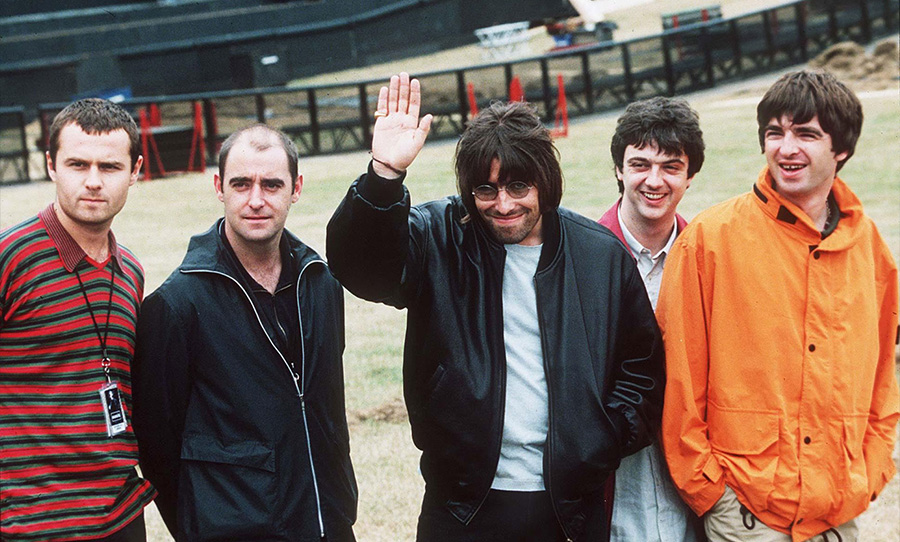

Oasis signed to independent record label Creation Records in 1993 and
released their record-setting debut album Definitely Maybe (1994). The
following year they recorded (What's the Story) Morning Glory? (1995)
with drummer Alan White, in the midst of a chart rivalry with Britpop
peers Blur. Spending ten weeks at number one on the UK Albums Chart,
(What's the Story) Morning Glory? was also an international chart
success, and became one of the best-selling albums of all time. In
addition, it stands as the fifth-best-selling album in the UK, and the
biggest-selling album in the UK of the 1990s. The Gallagher brothers
featured regularly in tabloid newspapers for their disputes and wild
lifestyles. In 1996, Oasis performed two nights at Knebworth for an
audience of 125,000 each night, the largest outdoor concerts in UK
history at the time. In 1997, Oasis released their third album, Be
Here Now; becoming the fastest-selling album in UK chart history.
However, its popularity declined quickly.